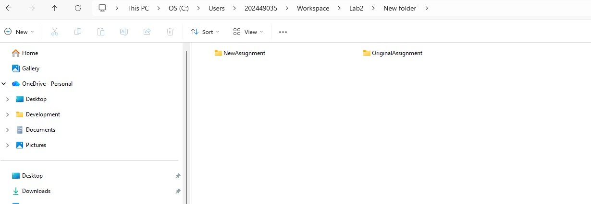
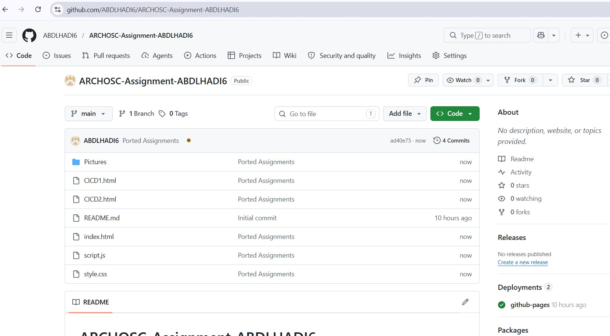
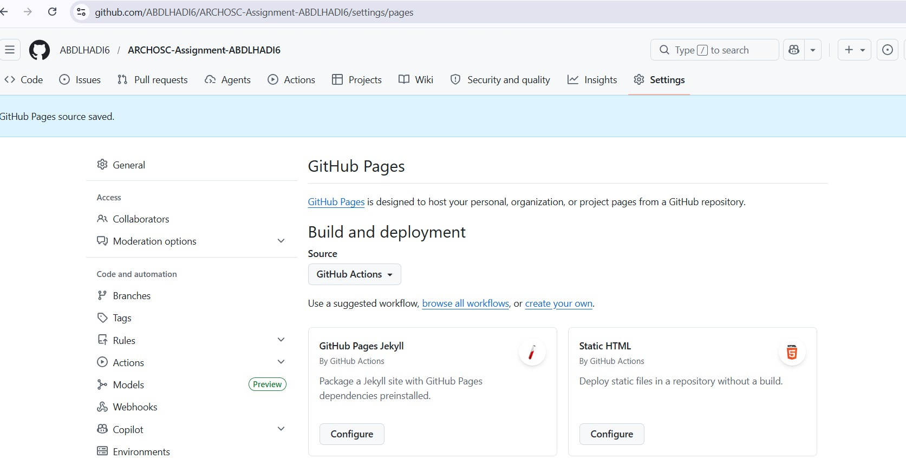
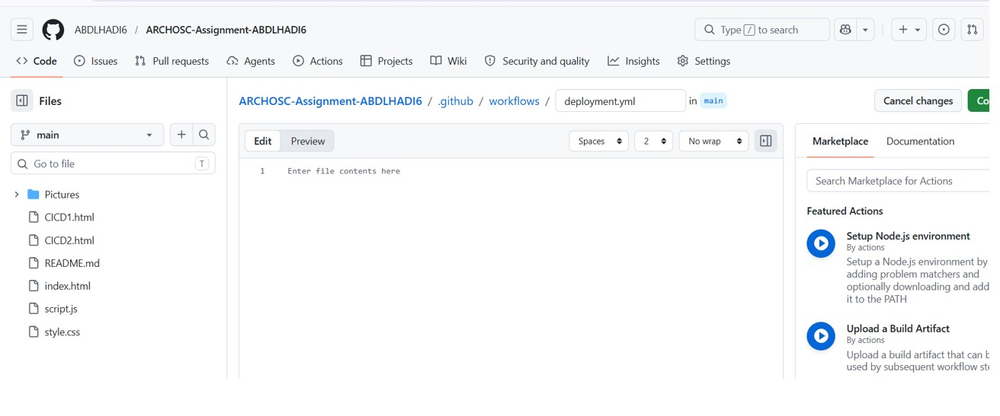
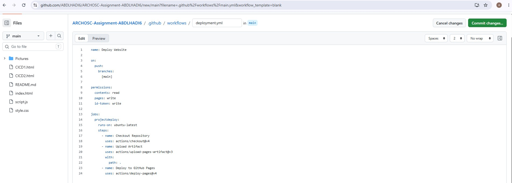
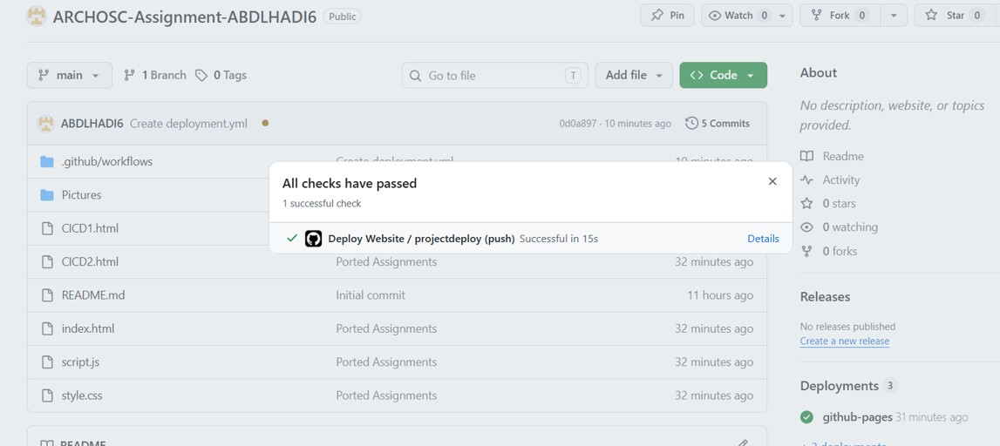
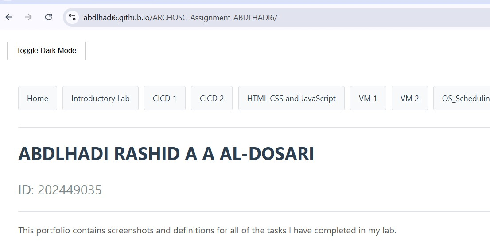

Lab Overview
In this lab, I set up a GitHub Actions pipeline using YAML to automate deploying my website. I moved my project to a new GitHub Classroom repository, created a deployment.yml workflow, and configured it to deploy to GitHub Pages whenever I push to the main branch. I then linked everything together with a navigation bar on a new HTML page.
Section 1: Fixing the Private Repository Issue
To resolve previous hosting limitations, we transitioned our project to a GitHub Classroom repository. I accepted the module assignment and generated a new repository link. On my local machine, I created a new folder structure with OriginalAssignment and NewAssignment directories. I used the command line to pull the previous week's code into the original folder and initialized the new repository in the other. Finally, we ported the files from the old project to the new one and committed the changes with the message "Ported Assignments."


Section 2: Moving to GitHub Actions Hosting
We updated our hosting method to move away from manual deployments. In the repository Settings, under the Pages section, I unpublished the previous site. I then changed the "Source" dropdown from "Deploy from a branch" to GitHub Actions. This allows our site to be built and deployed automatically through a custom pipeline rather than a static branch.

Section 3: Setting Up the YAML Pipeline
To define our automation rules, we initiated a new workflow. In the Actions tab, I selected "Set up a workflow yourself." I renamed the default file to deployment.yml. This YAML file serves as the instruction manual for GitHub, telling it exactly how to handle our code when changes are pushed.

Section 4: Writing the YAML Configuration
We built the pipeline step-by-step using YAML syntax. First, we defined the name and trigger conditions, setting the action to run whenever we push to the main branch. We then specified a job called project deploy to run on the ubuntu-latest virtual machine.

Section 5: Executing the Pipeline and Deployment
After committing the deployment.yml file, we monitored the progress in the Actions tab. I clicked into the running workflow to observe the virtual machine spinning up and executing each step in real-time. Once the "Deploy Website" action completed successfully, I verified the live site via the link provided in the GitHub Pages settings.

Section 6: Website Expansion and Interactivity
To improve the organization of our work, I created a new HTML page to house the content for this lab. I utilized a hyperlink (using the tag) to connect the original index.html to this new page, ensuring a smooth navigation flow. This structure makes the project easier to scale as we add more lab content.
Reflection on Linking Pages: I joined the pages together by creating a relative link between the two files. By ensuring both files are in the same root directory, the browser can transition between them without needing a full URL path. This is a fundamental concept in multi-page web applications.
